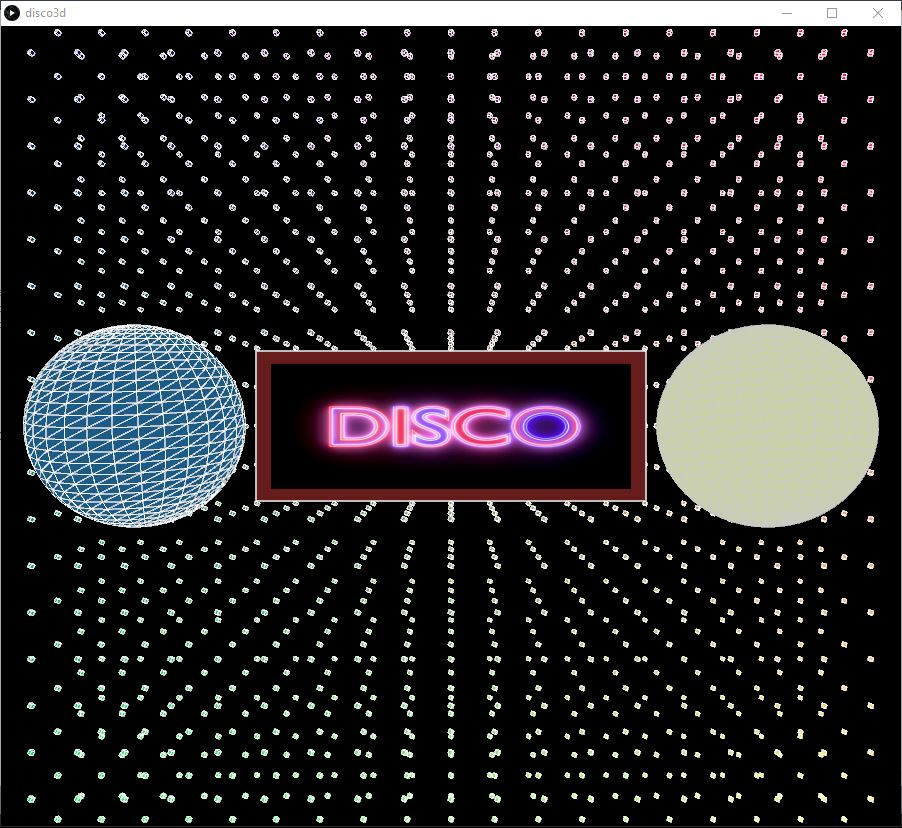
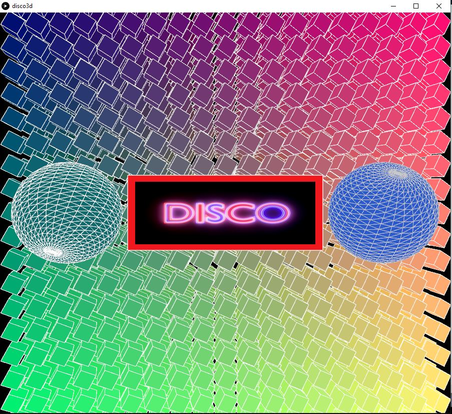
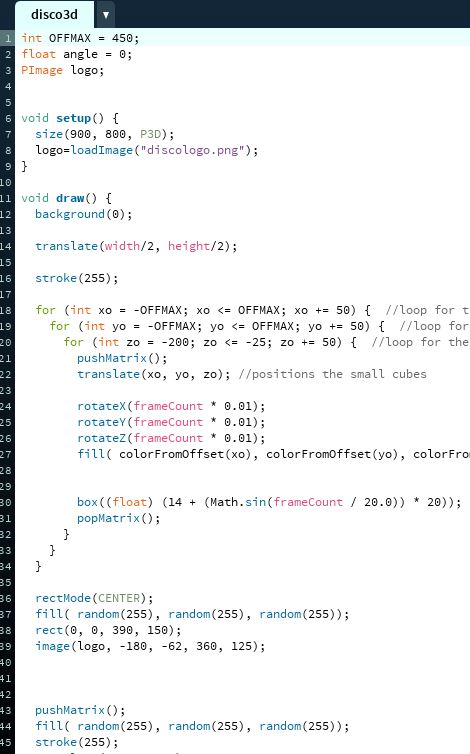

Edis MikulaniI'm an individual that is energetic, hardworking, and ambitious. In 2019, I was fortunate enough to achieve some experience in the Bank of England, where I worked with many different teams within the IT department. The enjoyment and interest I gained during my time there was a dominant factor towards my decision to study Computer science at City, University of London. By completing Further Education, I have acquired little experience in programming, but not a great amount. Therefore, I am fascinated by what's to come during my time at City and am looking forward to creating various kinds of projects that will most definitely enhance my programming skills. |
||
|
|
||
Bootcamp 2020: 3D DISCO AnimationMy first programming project, concluding the 2 week Programming Bootcamp at City (2020). By using Processing, I have developed an animation using 3D that creates a Disco effect. I have demonstrated a comprehensive understanding of many different techniques that have helped put my project together. I programmed my sketch using loops so that it created a grid of 3D cubes on all axis. Using loops were helpful in the fact that my coding was much more efficient, as I didn't need to program the cubes individually. Declaring different variables and using them alongside the loops allowed me to apply the details of the cubes easily (e.g. rotation, colour, position/offset, size). Matrix separated the lines of code so that the animation of the cubes were consistent and in the correct position. Using trigonometry and frameCount was significantly important as part of the animation. It adjusted the size of the cubes according to the frames of the sketch, providing a flashy disco effect. Finally, I used a lot of colours and randomness with the colours and created disco balls to create more of an impression of a Disco. Check out the code on Github. Looks better on your systems!: https://github.com/edismk01/adbt133 | ||
|    | ||